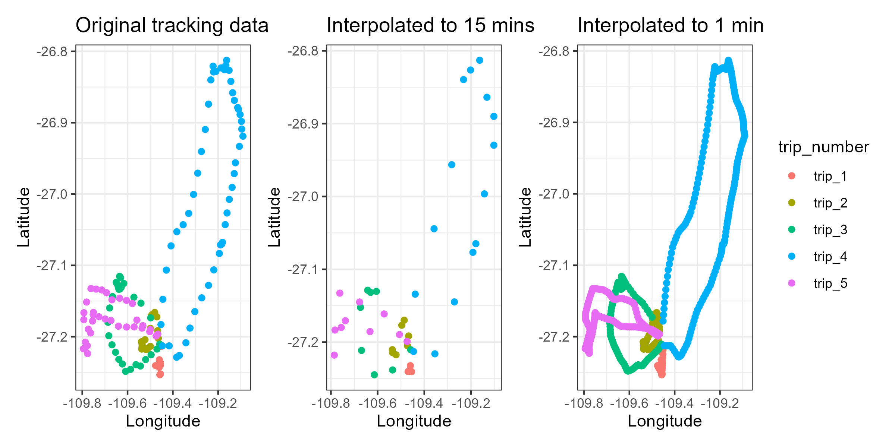

devtools::install_github("MiriamLL/sula")Interpolation
R
biologging
Y2022
How to interpolate tracking data.
Intro
Interpolation is a type of estimation, a method of constructing (or finding) new data ponts based on the range of a discrete set of known data points (source: wikipedia)
This post is about:
- How to prepare your data and use the function interpolate from the package sula for interpolating your tracking data
Interpolating your data might help you to:
- Fill gaps on your tracking data, and/or
- To make comparable trips when individuals were tracked at different intervals
… read more at the end of this page.
⚠️However, while interpolating you should be very cautious, because you are creating locations where the bird might have not been.
This post step by step:
1. Load data
2. Identify nest location / or central location
3. Classify if the animal was inside the central location or outside
4. Count the number of trips
5. Interpolate only when the animal was on a trip
You can also just go directly to : interpolate
Data 📖
To do this exercise, load data from the package ‘sula’.
For accessing the data, you need to have the package installed.
To install:
library(sula)The data is from 10 tracked individuals.
GPS_raw<-(GPS_raw)Select only one individual.
library(tidyverse)ID01_track<-GPS_raw %>%
dplyr::filter(IDs=='GPS01')Identify trips 🛩️
Identify the trips allows to remove all the central locations (e.g. the nest), because usually you will be not interested in interpolating the locations where the animal was at their central location, only when it was in a trip.
Nest location 🐣
Is also often the case that at fieldwork, the GPS are activated to start recording data just after releasing the animal back to their central location (-nest-)
Therefore, the first location recorded will correspond to their nest.
To identify the first location I use the function locate_nest from the package sula.
Because you might have different column names, you can add the names of your columns here in ‘column_lon’ and ‘column_lat’.
ID01_nest<-locate_nest(GPS_data = ID01_track,
column_lat = 'Longitude',
column_lon = 'Latitude')Manually: If you did not activate the GPS at their nest but you know the nest location, you can manually write it down.
ID01_nest<-data.frame(Longitude=-109.4531,
Latitude=-27.20097)Identify trips 🛩️
Now that you have the nest location, the function identify_trips from the package sula helps you to identify when the bird was out on a trip.
The function adds a new column, where ‘Y’ means that the location is outside the range you select (in the example 1 km), and ‘N’ means that the location is inside the range you select.
Therefore ‘Y’ is when the bird was on a trip, and ‘N’ is when it was at the nest.
identify_trips<-function(GPS_data=GPS_data,
Nest_location=Nest_location,
Distance_km=Distance_km){
required_cols <- c("Longitude", "Latitude")
for (df_name in c("GPS_data", "Nest_location")) {
df <- get(df_name)
missing_cols <- setdiff(required_cols, colnames(df))
if (length(missing_cols) > 0) {
stop(paste("Missing columns in", df_name, ":", paste(missing_cols, collapse = ", ")))
}
}
# tracks
track_df<-as.data.frame(GPS_data)
track_spatial<-track_df
track_spatial$lat<-track_spatial$Latitude
track_spatial$lon<-track_spatial$Longitude
sp::coordinates(track_spatial)<-~lon+lat
sp::proj4string(track_spatial)= sp::CRS("+init=epsg:4326")
track_spatial <- sp::spTransform(track_spatial, sp::CRS("+init=epsg:4326"))
track_spatial<-sf::st_as_sf(track_spatial)
# center buffer
colonia<-Nest_location
colonia_spatial<- sp::SpatialPoints(cbind(colonia$Longitude,colonia$Latitude))
sp::proj4string(colonia_spatial)= sp::CRS("+init=epsg:4326")
colonia_spatial <- sp::spTransform(colonia_spatial, sp::CRS("+init=epsg:4326"))
colonia_spatial<-sf::st_as_sf(colonia_spatial)
# distance
Distance_km<-Distance_km*1000
distancia_buffer<-sf::st_buffer(colonia_spatial, Distance_km)
# over
track_buffer<-sapply(sf::st_intersects(track_spatial,distancia_buffer),
function(z) if (length(z)==0) NA_integer_ else z[1])
#todo lo que esta dentro del buffer es 1 y fuera es 0
track_df$trip<-as.numeric(track_buffer)
#sustituye nas por ceros
track_df$trip[is.na(track_df$trip)] <- 0
track_df$trip<-gsub("1", "N", track_df$trip)
track_df$trip<-gsub("0", "Y", track_df$trip)
return(track_df)
}ID01_trips<-identify_trips(GPS_data=ID01_track,
Nest_location=ID01_nest,
Distance_km=1)Count trips 🧮
The function count_trips from the package sula removes the locations that are not trips (for example removes all rows where the animal was at the central location) and adds a column with the number of the trip.
ID01_onlytrips<-count_trips(GPS_data=ID01_trips)To check when the trips started and ended you can also use functions from the package tidyverse.
ID01_onlytrips %>%
group_by(trip_number)%>%
summarise(start=paste(first(DateGMT),first(TimeGMT)),
end=paste(last(DateGMT),last(TimeGMT)))If you know when the trip started and ended, you can also add the trip classification manually, using also functions from the package tidyverse.
ID01_onlytrips <- ID01_trips %>%
mutate(trip_number=
case_when(
DateGMT == '02/11/2017' & TimeGMT >= '19:34:31' & TimeGMT <= '20:09:24' ~ 'trip_1',
DateGMT == '03/11/2017' & TimeGMT >= '12:44:04' & TimeGMT <= '14:30:00' ~ 'trip_2',
DateGMT == '04/11/2017' & TimeGMT >= '07:45:17' & TimeGMT <= '09:41:28' ~ 'trip_3',
DateGMT == '04/11/2017' & TimeGMT >= '17:05:36' & TimeGMT <= '20:41:10' ~ 'trip_4',
DateGMT == '05/11/2017' & TimeGMT >= '09:06:13' & TimeGMT <= '11:26:14' ~ 'trip_5',
TRUE ~ "nest")) %>%
filter(trip_number != 'nest')Interpolate 🌐
interpolate_trips
Once the data frame contains columns with Longitude, Latitude, and trip_number, the trips can be interpolated.
The function interpole_trips from the package sula helps you to interpolate the locations based on an interval. In the examples below 900 secs = 15 minutes and 60 sec = 1 minute
Because you might have different column names, this function has a lot of arguments, but basically you just need to replace the name of your data frame, the interval you are interested to do the interpolation, the column names, and the format your date and time is presented.
ID01_interpolated15m<-interpolate_trips(GPS_data=ID01_onlytrips,
interval='900 sec',
column_date='DateGMT',
column_time='TimeGMT',
column_trip='trip_number',
column_lat='Latitude',
column_lon='Longitude',
datetime_format<-"%d/%m/%Y %H:%M:%S")ID01_interpolated1m<-interpolate_trips(GPS_data=ID01_onlytrips,
interval='60 sec',
column_date='DateGMT',
column_time='TimeGMT',
column_trip='trip_number',
column_lat='Latitude',
column_lon='Longitude',
datetime_format<-"%d/%m/%Y %H:%M:%S")interpolate_all
In case you want to interpolate a specific trip, or everything (including the central location), and you already have a datetime column in the correct format (so R can understand is date and time) there is also the function interpolate in the package sula that interpolates all the locations.
For example, to interpolate a specific trip, subset the trip you are interested in interpolating.
GPS01_trip5<-GPS_preparado %>%
filter(IDs=='GPS01')%>%
filter(trip_number=='trip_5')Use the function interpolate. Here I select the dataframe, the interval ofinterest, and the name of the columns that will be included in the interpolation.
GPS01_trip1_interpolated<-interpolate(GPS_data = GPS01_trip5,
interval='10 sec',
column_datetime = 'dia_hora',
column_lat = 'Latitude',
column_lon = 'Longitude')Plot 🖌️
Now lets compare the before and after, the tracking data vs the interpolated data.
The package patchwork lets us see the plots side by side.
library(patchwork)Create three plots, one using the original points, and two using the interpolation to compare.
Original_track<-ggplot(ID01_onlytrips, aes(x=Longitude, y=Latitude, color=trip_number)) +
geom_point()+
theme_bw()+
ggtitle('Original tracking data')+
theme(legend.position='none')
Interpolated_15m<-ggplot(ID01_interpolated15m, aes(x=Longitude, y=Latitude, color=trip_number)) +
geom_point()+
theme_bw()+
ggtitle('Interpolated to 15 mins')+
theme(legend.position='none')
Interpolated_1m<-ggplot(ID01_interpolated1m, aes(x=Longitude, y=Latitude, color=trip_number)) +
geom_point()+
theme_bw()+
ggtitle('Interpolated to 1 min')+
theme(legend.position='right')
Original_track+Interpolated_15m+Interpolated_1m
Now it is up to you to decide which interpolation interval fits better to your study.
Summary 👩🏽💻
TL;DR (too long; didn’t read)
library(sula)
library(tidyverse)
ID01_track<-GPS_raw %>% filter(IDs=='GPS01')
ID01_nest<-data.frame(Longitude=-109.4531,Latitude=-27.20097)
ID01_trips<-identify_trips(GPS_data=ID01_track,Nest_location=ID01_nest,Distance_km=1)
ID01_onlytrips<-count_trips(GPS_data=ID01_trips)
ID01_interpolated15m<-interpolate_trips(GPS_data=ID01_onlytrips,
interval='900 sec',
column_date='DateGMT',
column_time='TimeGMT',
column_trip='trip_number',
column_lat='Latitude',
column_lon='Longitude',
datetime_format<-"%d/%m/%Y %H:%M:%S")Recommended sources 📑
Some of the reasons to interpolate data are:
To fit the GPS locations with diving data. For example: Lerma et al. 2020, Browning et al. 2017
Because the recorded data was different between individuals, and thus interpolating data provides fixed intervals. For example: Borrmann et al. 2019
To fill occasional gaps in the tracking data, particularly for animals that dive and do not receive signal when submerged. For example: Iorio-Merlo et al. 2022.
If you can think on another case when interpolation is necessary please do not hesitate to write me to include it on the list.
Also if you use the function from the package sula please consider including the package in your citations.
For more details or suggestions you can also always write me an email